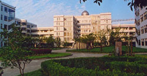

临近学校 感受书香气息
北面伴亭路上的市二院九亭分院是拥有500张床位的二级医院，并设有门急诊；九亭幼儿园就在本案东面，其他诸如农贸市场、银行超市、餐饮休闲、电信邮局等生活配套都集中于九亭大街和九新公路，应有尽有，完全可以满足您日常生活的所有需求。

此外，本案附近的上大外国语附中、九亭小学、九亭中学，九亭二小、九亭二中众多教育配套，在小区沿街还有特设的风情商业街，既有宁静美景又有繁华商业，让你的生活尽情放松之余又可满足你的生活所需。
复地富顿苑 交通畅通便利
嘉金高速连接南北，沪杭高速，沪青平318国道直接通往市区徐汇和长宁。轻轨9号线直达七宝、漕河泾开发区、宜山路、徐家汇商圈 拥有92B（本案—万体馆）、759（本案—莘庄）、748（本案—虹桥路凯旋路）、706（本案—徐泾东地铁站）4条市区公交线路。松江40路、41路、43路都经停本案开往地铁九号线